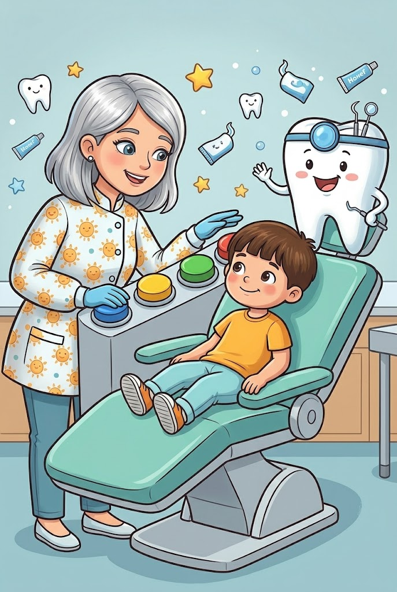
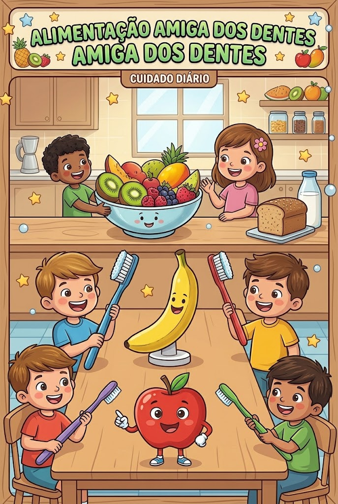
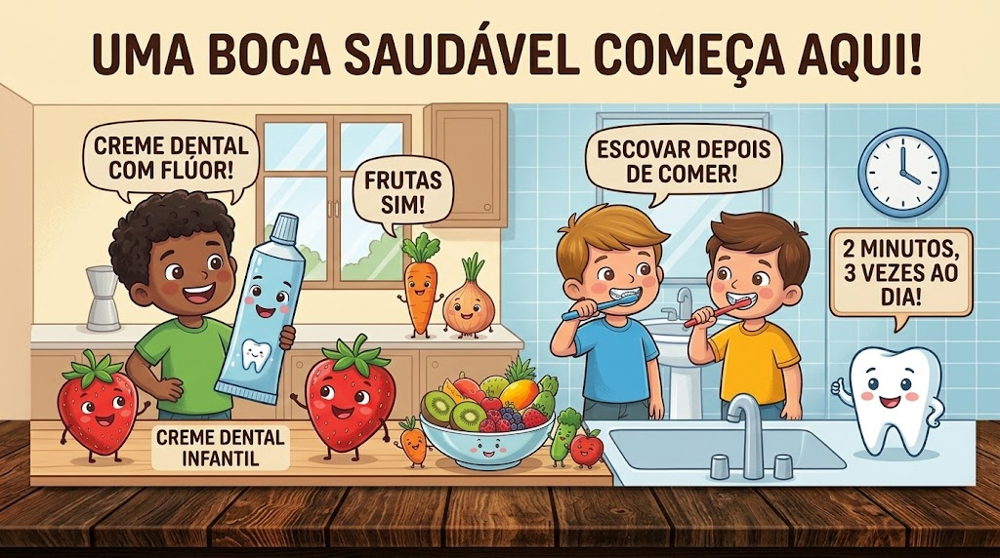

Olá, meus netinhos queridos! Sentem aqui pertinho da vovó que hoje eu vou contar uma história mágica sobre o nosso sorriso. Vocês sabiam que dentro da nossa boca mora um verdadeiro reino? É o Reino dos Dentes Brilhantes! ✨ Para manter esse reino sempre feliz e protegido contra os monstrinhos da cárie (aqueles bichinhos invisíveis que adoram comer os restos do nosso lanche), nós precisamos usar três superpoderes todos os dias.



Para manter o reino dos dentes brilhantes sempre seguro, precisamos fazer movimentos suaves e circulares com a escova, como se estivéssemos desenhando bolinhas nos dentes! Não se esqueça de escovar bem lá atrás e também a língua, para deixar o hálito super refrescante.